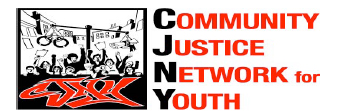

Youth and The US Juvenile Justice System
This curriculum was developed by:
The School of Unity and Liberation

The Community Justice Network for Youth
Written By: Malachi Larrabee Garza
Designed By: Karla Dominguez
Edited By: Shadi Rahimi
Other Manuals Avaialable:
- The CJNY System Accountability Toolkit (SAT) is useful for community organizing. it outlines successful data driven strategies to confront racial and ethnic disparities.
- The CJNY Alternatives to Detention (ATD) manual outlines strategic steps for organizations or centers interested in becoming or forming an alternative to detention in their community.
Contact
For Western and/or Southern region activities please contact:
Christina Gomez at cgomez@burnsinstitute.org or (415) 321-4100 x102
For Midwest and/or Eastern region activities please contact:
Tshaka Barrows at tbarrows@burnsinstitute.org or (415) 321-4100 x106
For technical assistance, peer exchange activities or curriculum please contact:
Malachi Larrabee-Garza at mgarza@burnsinstitute.org or (415) 321-4100 x110
Copyright © 2009, W. Haywood Burns Institute